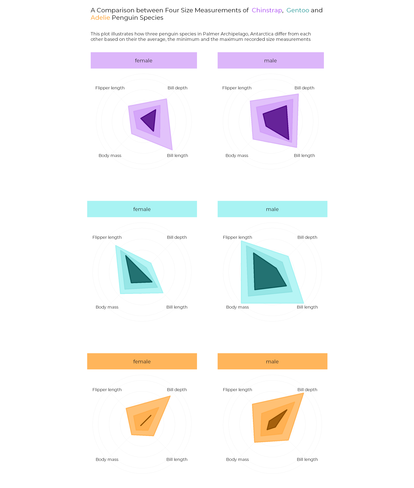
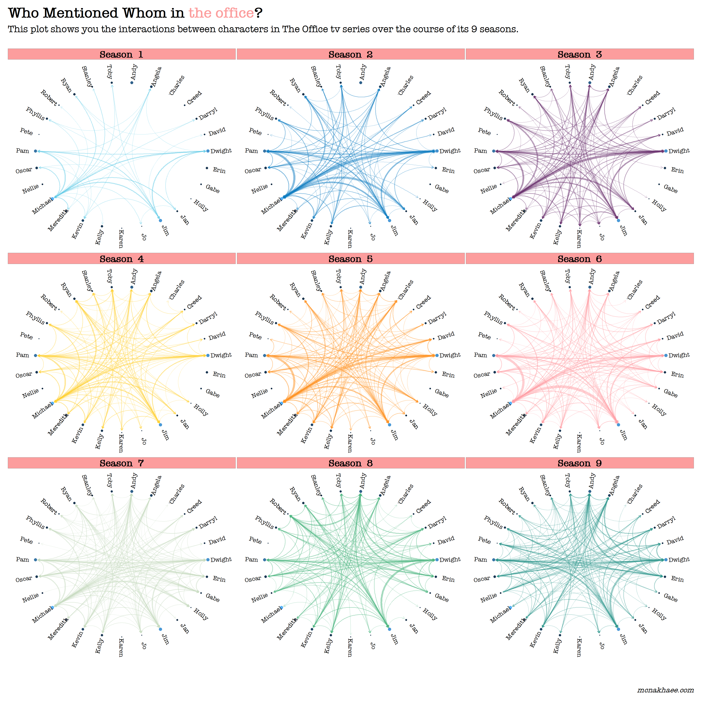
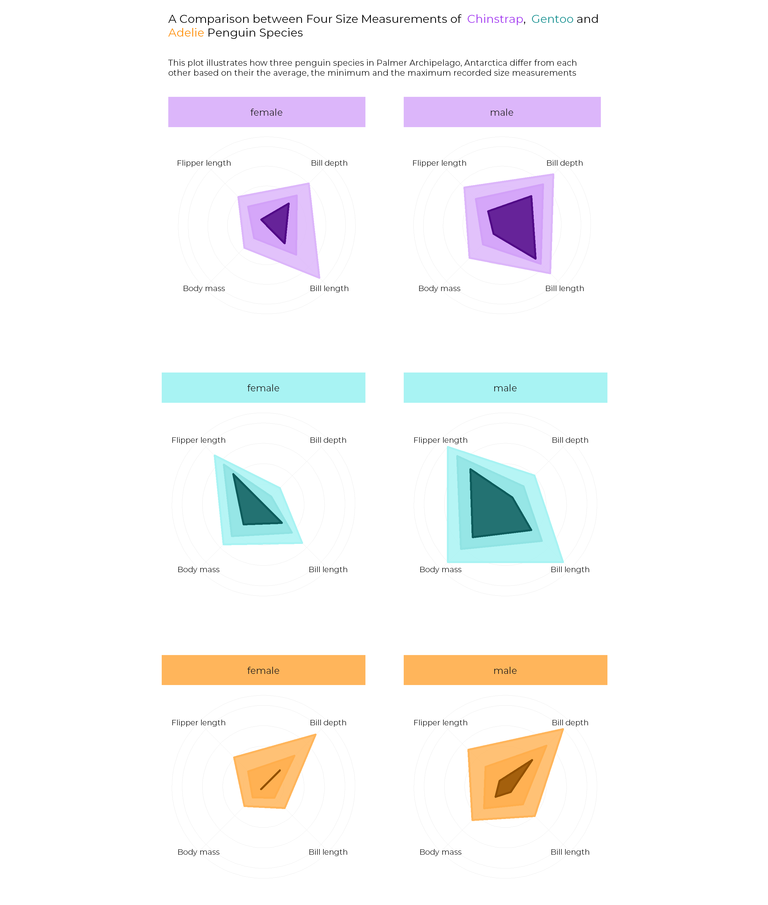
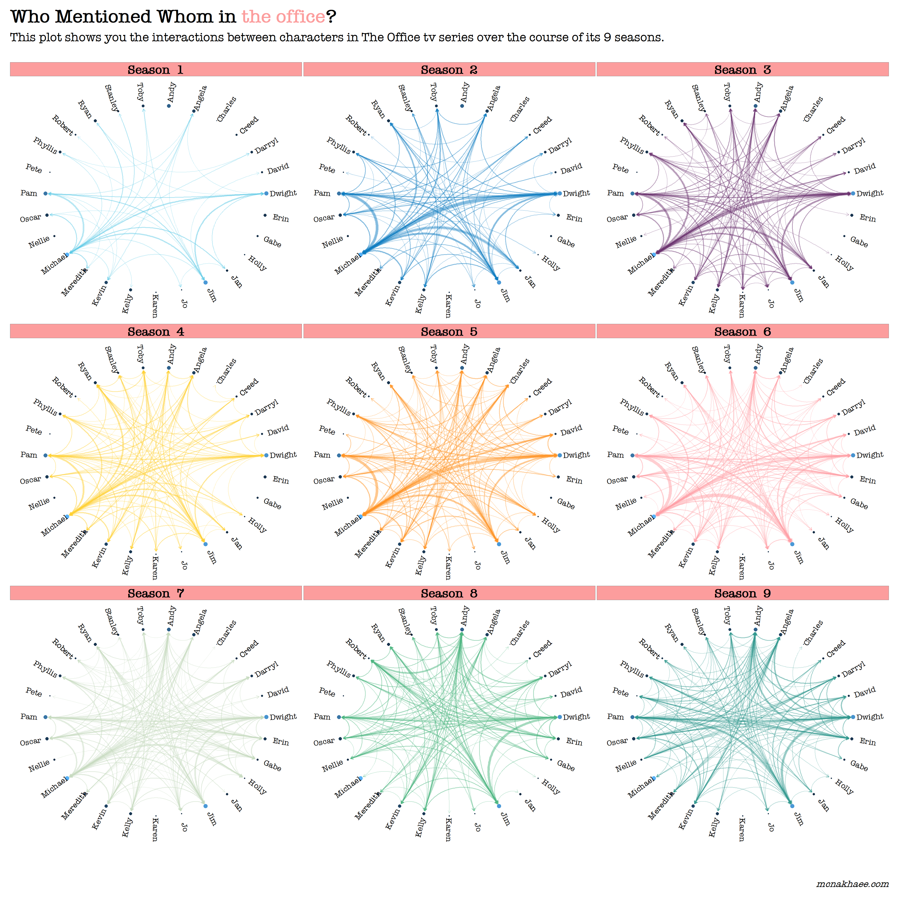

2020
Week 39 - Himalayan Peaks

Week 37 - Friends

Palmere Penguines

Week 12

Week 3

For six years, I used python exclusively as the primary tool for carrying out my data science tasks and running my experiments. Recently, I have started using Tidyverse packages and tools in R for my data science activities. I am completely fascinated by how these tools make it easy for me to perform analysis and create nice visualization. Since then, I have tried to participate in the weekly Tidy Tuesday project. You can find my submissions on this page.

